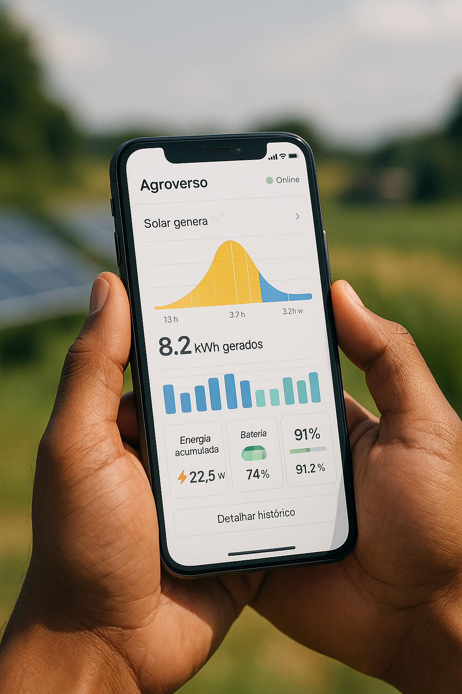
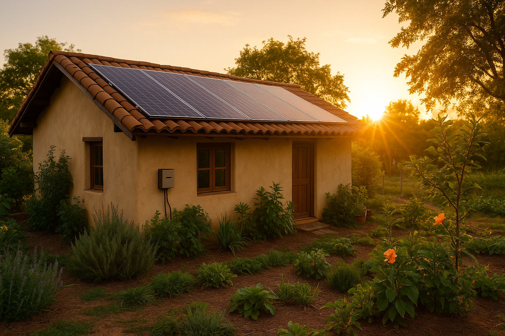

## 🔗 Integração com Tally.xyz
### Etapas:
1. Acesse: https://www.tally.xyz/explore


2. Clique em **“Submit New DAO”**
3. Insira:
- Endereço do `Governor`: `0x...`
- Nome da DAO: `URBZ`
- Token: `URBZ (ERC20Votes)`
- Blockchain: Sepolia ou Mainnet
- ⚡ Monitoramento remoto em tempo real por aplicativo ou dashboard web
- 🌞 Geração limpa, silenciosa e contínua com impacto ambiental positivo
- 📊 Visualização gráfica de geração, consumo e eficiência
- 🌤️ Operação otimizada mesmo em dias nublados ou com baixa irradiação
- 🔋 Compatível com baterias e micro-redes híbridas para independência total
4. Complete os metadados:
- Website: https://urbz.tec.br
- GitHub, Twitter, Whitepaper, etc.
5. Confirme a verificação com Etherscan + Tally Bot
📲 Solicitar orçamento via WhatsApp